해양공학기사 (2005-05-29 기출문제)
1과목: 해양학개론
1. 현재 염소량으로부터 염분을 환산하는데 사용하고 있는 공식은?
- S = 0.043 + 1.0044×S
- S = 1.8⑤×Cl + 0.03
- S = 1.80655×Cl
- S = 1.00045×Cl
(정답률: 알수없음)

2. 대양에 존재하는 해수의 순환을 그 원인에 따라 크게 풍성 순환과 열염분 순환으로 구분할 때, 다음 중 열염분 순환과 관계가 적은 것은?
- 해수의 밀도차
- 표층류
- 심해류
- 느리고 수직성분이 존재한다.
(정답률: 알수없음)
3. 해수의 열팽창계수 β에 대한 설명이 옳은 것은?
- 염분도가 낮으면 수온에 무관하게 항상 음의 값을 가진다.
- 낮은 수온에서 염분도에 무관하게 항상 음의 값을 가진다.
- 보통 자연조건하의 해수에서 수온이 증가함에 따라 항상 증가한다.
- 수온과 염분도에 무관하다.
(정답률: 알수없음)
4. 북회귀선에서 적도근처까지의 해면을 서류하는 우세한 난류는?
- 북적도 해류
- 남적도 해류
- 아라스카 해류
- 적도 반류
(정답률: 알수없음)
5. 해수중에 존재하는 질소화합물 중에서 생물생산과 가장 관계가 없는 것은?
- N2
- NO2-
- NO3-
- NH4+
(정답률: 알수없음)
6. 우리나라 연안주변에서 탁월한 조석, 조류, 내부조석의 주기는 얼마인가?
- 약 1/4일
- 수일 이상
- 약 1일
- 약 1/2일
(정답률: 알수없음)
7. 다음 중 서안경계류(western boundary current)는?
- 쿠로시오 해류
- 노르웨이 해류
- 북대서양 해류
- 페루해류
(정답률: 알수없음)
8. 다음은 해양의 물리적 성질을 설명한 것 중 틀린 것은?
- 해수의 온도구간은 -2 ∼ 30℃ 이다.
- 해수는 열용량이 크고 열전도율이 높다.
- 해수는 자연상태에서 기체, 액체, 고체의 세가지 상이 모두 나타난다.
- 해수의 압력은 10m에 1/2 기압씩 증가한다.
(정답률: 알수없음)
9. 붕단(shelf break)의 평균수심은?
- 100m
- 130m
- 155m
- 200m
(정답률: 알수없음)
10. 해수 중의 음파속도는 해수의 밀도에 따라 다르다. 다음 중 바르게 설명된 것은?
- 수온, 염분, 압력이 높을수록 음속은 크다.
- 수온, 염분, 압력이 낮을수록 음속은 크다.
- 수온이 낮고 압력이 높은 심층에서 음속은 낮다.
- 수심 약 1000m 부근에서 음속 최대층이 존재한다.
(정답률: 알수없음)
11. 해수의 열염순환(Thermohaline circulation)과 가장 관계가 깊은 것은?
- 바람
- 밀도
- 압력
- 표면장력
(정답률: 알수없음)
12. 일반적으로 선박이나 해양구조물에 상당한 피해를 입히는 바다의 오손 생물로서, 유일한 고착성 갑각류는?
- 게류
- 연갑류
- 만각류
- 바닷가재류
(정답률: 알수없음)
13. 다음의 T-S diagram에 대한 설명 중 옳은 것은?
- Ekman 나선을 나타낸 그림이다.
- 온도와 염분의 상관곡선으로 수괴의 특성을 나타낸다.
- 파랑의 형태를 나타낸 그림이다.
- 북태평양의 표면수온의 분포를 나타낸 그림이다.
(정답률: 알수없음)
14. 다음 중 석유자원이 부존할 수 있는 암석 구조는?
- 다공질 사암
- 다공질이 아닌 사암
- 투수성이 적은 사암
- 굳은 사암
(정답률: 알수없음)
15. 대양의 표층에서 나타나는 해수순환은 다음 중 어느 힘에 기인되는가?
- 밀도차
- 바람
- 지구자전
- 해양-대기간의 열수지
(정답률: 알수없음)
16. 지진파 중 가장 빠른 속도로 전해져서 어떤 지점이든 가장 먼저 도달하는 파(Wave)는 무엇인가?
- P파
- S파
- L파
- S및 L파
(정답률: 알수없음)
17. 심해저 시추계획(Deep Sea Drilling Project)의 주목적은 무엇인가?
- 석유 탐사
- 해저 광물자원 조사
- 천연가스 매장량 조사
- 대양저의 진화과정 연구
(정답률: 알수없음)
18. 유기물질이 해저에서 원유로 변하는데 가장 적절한 온도는 얼마인가?
- 50∼70℃
- 30∼100℃
- 50∼150℃
- 100∼300℃
(정답률: 알수없음)
19. 북반구에서 취송류의 방향은 바람의 진행방향에 대하여 어느 쪽인가?
- 오른쪽
- 왼쪽
- 같은 방향
- 반대방향
(정답률: 알수없음)
20. 제4기 빙하기에 퇴적된 굴(oyster)의 연령을 측정하는 가장 좋은 방법은?
- TH230 방법
- C14 방법
- B10 방법
- fission-track 방법
(정답률: 알수없음)
2과목: 해양수리학
21. 해안의 표사량에 의한 분류에 해당되지 않는 것은?
- 합성해안
- 안정해안
- 결괴해안
- 퇴적해안
(정답률: 알수없음)
22. Kelvin파에 대한 다음 설명 중 틀린 것은?
- 일반적으로 북반구에서는 반시계 방향으로, 남반부에서는 시계 방향으로 회전한다.
- 무조점을 중심으로 하여 등조시선에 수직인 방향으로 진행한다.
- 지구 전향력에 의해 회전 성분이 발생한다.
- 하나의 만에는 하나의 무조점이 존재한다.
(정답률: 알수없음)
23. 파랑이론에서 다음의 설명 중 Ursell 계수가 작을 경우 옳은 것은?
- 미소진폭파의 이론이 잘 맞는다.
- 파랑의 수심에 대한 비가 크다.
- 쓰나미에 적합하다.
- 비선형성의 정도와는 무관하다.
(정답률: 알수없음)
24. 다음 월조간격에 대한 설명 중 맞지 않는 것은?
- 월조간격은 장소에 따라서는 같으나 날에 따라서는 수십분의 범위로 변화한다.
- 고조간격과 저조간격을 합한 것이 월조간격이다.
- 달이 그 지점의 자오선을 통과한 후 고조에 이르기까지의 시간을 고조간격이라 한다.
- 신월 및 만월 날의 고조간격의 장년에 걸친 평균을 조후시라고 한다.
(정답률: 알수없음)
25. 특정 해역에서 조류의 시간에 따른 변화 양상을 예보하려할 때 다음 기술 중 타당한 것은?
- 조석예보는 가능하나 조류예보는 불가능하다.
- 특정기간 동안 조류 관측을 실시하고 외삽법(extrapolation)을 이용, 관측기간 이후의 조류를 예보한다.
- 특정기간 동안 관측된 조류 자료를 분석하여 산출된 조화상수를 이용하여 예보한다.
- 조류예보를 위해서는 조류, 수온, 및 염분 관측이 필요하다.
(정답률: 알수없음)
26. 표사로 인한 해빈의 특수한 평면 형상중에서 자연해안 특히 결괴성 해안에서는 정선(汀線)이 원호상으로 드나드는 일이 많다. 이와 같은 원호상의 정선을 무엇이라 하는가?
- Cusp
- Sand spit
- Tombolo
- Berm ridge
(정답률: 알수없음)
27. 중복파에 관해서 설명한 것 중 옳은 것은?
- 중복파는 파고, 주기 및 진행방향이 동일한 2개의 파랑이 포개질 때 발생한다.
- 중복파의 물입자 이동속도는 파형과 같이 입사파와 반사파를 합성해서 구할 수 없다.
- 중복파의 복(antinode)에서 물입자는 수평운동만 한다.
- 중복파의 마디(node)에서 물입자의 속도가 최대이다.
(정답률: 알수없음)
28. 해양구조물에 작용하는 관성력은 파고(H)에 따라 어떻게 변하는가?
- H에 무관하다.
- H에 비례한다.
- H2에 비례한다.
- H3에 비례한다.
(정답률: 알수없음)
29. 외해에서 조석 1주기 동안 조류에 의한 표층 수립자의 수평면 상에서 근사적으로 어떤 궤적을 그리겠는가?
- 타원
- 반원
- 직선
- 나선
(정답률: 알수없음)
30. 밀도가 ρ인 유체가 수로경사 I인 수로를 수심 H로 흐르고 있을 때 마찰속도(u*)는?
- ρHI
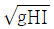
- ρgHI
- gHI
(정답률: 알수없음)
31. 조류에 의하여 원형단면을 갖는 파일에 작용하는 하중은 Regnolds수 105 ~ 106 에서 급격히 감소한다. 그 이유는?
- 마찰저항이 급격히 증가하므로
- 박리점이 앞으로 진행하므로
- 박리점이 뒤로 진행하므로
- 양력이 급격히 증가하므로
(정답률: 알수없음)
32. 다음에서 쇄파 현상과 가장 관계가 적은 것은?
- 파고와 파장의 비
- 파고와 수심의 비
- 파장와 수심의 비
- 해저면 경사
(정답률: 알수없음)
33. 토사 입자의 해저 이동시 마모되는 정도의 지표(指標)가 되는 것은?
- 구상율(球狀率)
- 원상율(圓狀率)
- 환율(丸率)
- 공극율(空隙率)
(정답률: 알수없음)
34. 연안 표사대(littoral zone)의 폭에 관한 설명 중 옳은 것은?
- 해안선에서 쇄파선까지
- 해안선에서 전면 이동한계 수심까지
- 해안선에서 표층 이동한계 수심까지
- 해안선에서 완전 이동한계 수심까지
(정답률: 알수없음)
35. 수심이 극히 작은 곳에서의 파동이나 위어의 월류수심이 작은 흐름에서 적용해야 할 상사율은?
- Froude상사율
- Weber상사율
- Reynolds상사율
- Cauchy상사율
(정답률: 알수없음)
36. 우리나라 해도 수심의 기준면은?
- 평균 해면 + 4대 분조 진폭의 합
- 평균 해면 - 대조차
- 평균 해면 - 4대 분조 진폭의 합
- 평균 해면 + 대조차
(정답률: 알수없음)
37. 직립 안벽의 반사계수가 0.7로 설계되어있다. 안벽위에서 파고를 관측한 결과 최대 치솟음과 최대 내려감은 바닥을 기준할 때 7.6m와 5.8m가 각기 되었다. 입사파의 파고는?
- 6.7m
- 1.26m
- 1.8m
- 1.06m
(정답률: 알수없음)
38. 모래입자(粒子)의 평균입경이 d(㎝), 해수의 밀도를 ρ(g/㎝3), 모래입자의 밀도를 σ(g/㎝3), 동점성계수를 ν(㎝2/sec)라고 할때 Stokes의 한계침강속도 Vc(cm/sec)를 올바르게 나타낸 식은?
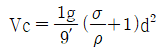
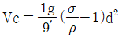
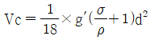
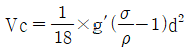
(정답률: 알수없음)
39. 다음 조류의 일반적 성질에 관한 설명 중 맞지 않는 것은?
- 조류의 주기운동은 수직적인 조위변화와 그 성질이 같다.
- 저조에서 고조사이에 유속이 최대로 되는 방향의 조류를 최강 창조류라 한다.
- 일주조류의 해석을 위해서는 최소한 1주야(25시간) 관측이 필요하다.
- 조류는 장주기 파동류이므로 섬이나 암초등의 영향을 거의 받지 않는다.
(정답률: 알수없음)
40. 다음 중 운동학적 상사조건에 포함되지 않는 것은?
- 길이
- 속도
- 면적
- 질량
(정답률: 알수없음)
3과목: 해양구조공학
41. 항만 외곽시설물 중 방파제의 계획 배치시 특히 유의해야 할 사항은?
- 파랑의 주기와 수심
- 연안류, 조류 및 수심
- 파랑의 입사각과 방파제의 평면형상
- 항내수면적과 항구의 위치
(정답률: 알수없음)
42. 직립방파제에 작용하는 중복파압의 산정식에 있어서 Sainflou의 간략식 중 잘못된 것은?
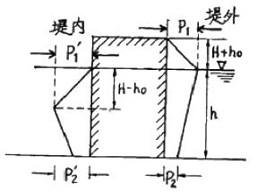
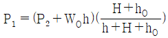
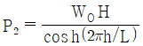
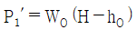
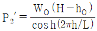
(정답률: 알수없음)
43. 다음 중 방파제의 평면 배치형태에 속하지 않는 것은?
- 이안제
- 돌제
- 경사식
- 도제(섬식)
(정답률: 알수없음)
44. 다음 중 방파제의 구조양식이 아닌 것은?
- 혼성제
- 도류제
- 경사제
- 직립제
(정답률: 알수없음)
45. 항내 수역시설 중 좋은 박지(anchorage)의 구비조건이 아닌 것은?
- 박지주변은 항상 정온해야 한다.
- 박지의 정온도를 높이기 위해 수면적을 적게해야 한다.
- 수심이 충분히 깊어야 한다.
- 해저지질이 선박의 닻에 걸리는데 적합해야 한다.
(정답률: 알수없음)
46. 방파제의 천단고를 결정할 때 고려하는 요소로 가장 거리가 먼 것은?
- 파고
- 조위
- 조류
- 방파제 단면 형상
(정답률: 알수없음)
47. 다음 해양구조물 중 자체중량으로 해저면에 위치를 확보하는 구조물로서 북해 등 파도가 심한 지역에 빠른 시간내에 설치가 가능한 것은?
- 인장강식 플래트홈
- 콘크리트 중력식 플래트홈
- 철제 고정 플래트홈
- 갑판 상승식 시추선
(정답률: 알수없음)
48. 그림과 같은 트러스에서 부재 BD의 부재력은?
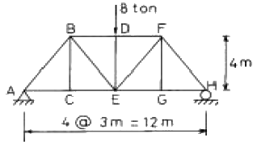
- 4 ton (압축)
- 4 ton (인장)
- 6 ton (압축)
- 6 ton (인장)
(정답률: 알수없음)
49. 주로 하구에 있어서 하천수를 일정한 방향으로 유도하기 위하여 만든 시설은?
- 방사제
- 호안
- 도류제
- 방조제
(정답률: 알수없음)
50. 파장이 L, 파고를 H로 나타낼 때 H/L을 파형경사도(wave steepness)라고 한다. 일반적인 바다의 파형경사도 범위는 어느 정도인가?
- 1/100 미만
- 1/100 이상 1/25 미만
- 1/125 이상 1/10 이하
- 1/125 이상 1/2 이하
(정답률: 알수없음)
51. 주응력면(principal plane)에 관한 설명 중 틀린 것은?
- 주응력면들은 직교한다.
- 주응력면에서 전단응력은 0 이다.
- 최대 전단응력은 주응력면에 평행하게 발생한다.
- 최대 인장응력 또는 최대 압축응력은 주응력면에서 발생한다.
(정답률: 알수없음)
52. 해안 및 수산 구조물 설계시 설계파로서 일반적으로 사용하는 통계파는?
- 최대파고(Hmax)와 유의 파주기(T1/3)
- 1/10최대파고(H1/10)와 1/10최대파주기(T1/10)
- 유의파고(H1/3)와 유의파 주기(T1/3)
- 유의파고(H1/3)와 평균주기
(정답률: 알수없음)
53. 해양구조물의 K-joint 용접시 응력집중에 의한 피로강도를 계산한다. 이 때 최소 피로강도 기간의 기준은?
- 10년
- 20년
- 50년
- 100년
(정답률: 알수없음)
54. 다음의 항만 시설중 외곽시설에 속하지 않는 것은?
- 방파제
- 갑문
- 도류제
- 잔교
(정답률: 알수없음)
55. 트러스의 정의가 옳은 것은?
- 두개이상의 부재양단을 강결(Rigid jount)한 구조물이다.
- 두개이상의 부재양단을 마찰이 없는 힌지로 연결한 한 구조물이다.
- 두개 이상의 부재양단을 고정 또는 탄성고정 한 구조물이다.
- 두개이상의 부재양단을 강결(Rigid joint) 힌지 및 고정을 혼용한 구조물이다.
(정답률: 알수없음)
56. 다음과 같은 장주 A가 최대 100 t의 압축력을 견딜 수 있을 때 같은 단면을 가진 장주 B가 지지할 수 있는 압축력 P의 크기는?
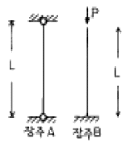
- 25t
- 50t
- 204t
- 400t
(정답률: 알수없음)
57. 다음과 같은 게르버보에서 C점의 수직반력의 크기는?
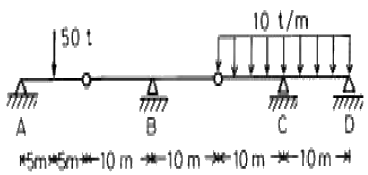
- 25 t
- 50 t
- 100 t
- 150 t
(정답률: 알수없음)
58. 구(球)가 정상운동시 난류경계층을 지나면 항력계수는 레이놀드 수(Reynolds number)에 무관하게 된다. 이 때의 항력계수는?
- 0.1
- 0.2
- 0.4
- 0.8
(정답률: 알수없음)
59. 직경 10cm, 길이 10m인 수직원주가 일정풍속 100Knots에서 받는 풍력은? (항력계수 2.0, 공기밀도 1.225Kg/m3, 1Knot=1852m/hr)
- 207.5N
- 415N
- 2419N
- 3242N
(정답률: 알수없음)
60. 선형파 이론에 의한 단위수면적의 파동에너지는? (단, H=파고, ρ=밀도, g=중력가속도, h=수심)
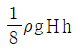
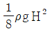
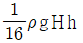
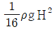
(정답률: 알수없음)
4과목: 측량학
61. 다음 중 1등 수준환의 폐합차는?
- 1.5√D mm
- 5.0√D mm
- 10.0√D mm
- 15.0√D mm
(정답률: 알수없음)
62. 채취한 저질의 입도분포를 알아내기 위한 방법이 아닌 것은?
- 체로 쳐서 분류하는 법
- 침강법
- 현미경법
- PNJ법
(정답률: 알수없음)
63. 음향측심기에서의 음속도의 기준은?
- 150 m/sec
- 340 m/sec
- 1,500 m/sec
- 2,800 m/sec
(정답률: 알수없음)
64. 전파는 그 진행경로에 따라 구별되는 데, 송신안테나에서 윗쪽으로 방사된 전파는 지구대기 상층부의 전리층에서 대부분 반사되어 지상으로 돌아오게 되는 방법을 이용한 것은?
- 대지반사파
- 지표파
- 공간파
- 직접파
(정답률: 알수없음)
65. 음파 탐사에 대한 설명 중 옳지 않은 것은?
- 해저의 지질 및 지질구조를 조사하는 방법이다.
- 음파탐사법은 크게 반사법과 굴절법으로 구분된다.
- 음향측심과 동시에 시행하는 경우가 많다.
- 해수중과 지층내 음파속도는 큰 차이가 있는 것으로 가정한다.
(정답률: 알수없음)
66. 수중에서 음파의 전파속도는 어느 것인가? (단, r : 정압비열과 정적 비열의 비, ρ : 밀도, ε :압축률)
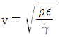
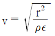
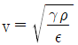
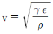
(정답률: 알수없음)
67. 다음 중 국제단위계(SI단위계)의 기본단위가 아닌 것은?
- Meter
- Candela
- Radian
- Second
(정답률: 알수없음)
68. 전파측량에 있어서 단거리방식에 속하는 전파측량장비는?
- Loran-A
- Loran-C
- Omega
- Hi-Fix
(정답률: 알수없음)
69. 다음 연안 항법의 선박위치를 구하는 방법 중 원호상위치선을 얻을 수 없는 경우는?
- 방위를 관측하는 경우
- 등수평각을 관측하는 경우
- 수평거리를 관측하는 경우
- 등수직각을 관측하는 경우
(정답률: 알수없음)
70. 지구의 곡률에 의해 발생하는 오차는?
- 구차
- 기차
- 상차
- 양차
(정답률: 알수없음)
71. 다음은 전파측량의 위치선 결정 중 원호방식에 대한 설명이다. 가장 거리가 먼 것은?
- 근거리 해역에서 정밀한 위치의 결정을 필요하는 수심 측량 토목공사 등에 사용된다.
- 위치선이 원호이므로 위치선의 작도가 쉽다.
- 선상국은 종국, 육상의 무선국은 주국이다.
- 두개의 원호는 전자기기를 사용하여 육상기지점에 설치된 두개의 고정무선국과 이동무선국 사이의 거리관측에 이용된다.
(정답률: 알수없음)
72. 삼각측량에서 얻어진 거리(변길이)는?
- 지점간의 실제거리이다.
- 지점간의 평균거리이다.
- 평균 해수면상에 투영된 거리이다.
- 평균 해수면과는 관계없다.
(정답률: 알수없음)
73. 육분의로 2개 목표의 시준각을 일정하게 유지하면서 측량선 위치를 유도하는 방법은?
- 직선유도법
- 원호유도법
- 방사선법
- 쌍곡선법
(정답률: 알수없음)
74. 송신음파와 수신음파의 도착시간차가 10-3초, 수중음속이 1,500m/s일 때 수심은?
- 1.50m
- 1.00m
- 0.75m
- 0.50m
(정답률: 알수없음)
75. 다음 중 사용 목적이 소축척 도화용인 사진기는?
- 초광각사진기
- 광각사진기
- 보통각사진기
- 협각사진기
(정답률: 알수없음)
76. 등고선 간격 결정시 고려할 사항으로 가장 거리가 먼 것은?
- 지형상황
- 경사의 완급
- 축척
- 거리
(정답률: 알수없음)
77. 다음 항해용 해도에 관한 설명 중 틀린 것은?
- 총도는 광대한 해역을 일괄하여 볼 수 있는 해도로서 축척은 1/4,000,000이하이다.
- 원양항해에 사용되는 원양항해도는 축척이 1/1,000,000 이하이다.
- 근해항해도는 선박위치를 육지에 등대, 등부표등에 의해 결정할 수 있는 도면으로서 축척은 1/3,000,000 이하이다.
- 해안도는 연안의 제반지형, 물표가 상세히 표시된 도면으로서 축척 1/5,000이하로 통일된 연속도로 함을 원칙으로 한다.
(정답률: 알수없음)
78. 다음 그림과 같이 지향각 θ의 초음파가 연직으로 부터 θ = 15˚방향으로 송신되었다. 직하수심 AB=10m일 경우 음향 측심 기록상 판별 불능이 비고의 한계 EF=30cm로 하려면 θ를 얼마로 하여야 하는가?
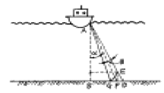
- 1.7°
- 3.7°
- 6.6°
- 5.0°
(정답률: 알수없음)
79. 항공사진 판독의 기본요소가 아닌 것은?
- 색조, 크기
- 질감, 모양
- 형상, 음영
- 날짜, 촬영고도
(정답률: 알수없음)
80. 다음 중 위성항법(satellite navigation)과 관계 없는 것은?
- NASS
- GIS
- GPS
- 도플러효과
(정답률: 알수없음)
5과목: 재료공학
81. 다음 중 주철(cast iron)의 설명으로서 틀린 것은?
- 선철종류에 따라 적당히 조합시켜 별도로 철설(鐵屑)을 가해서 용선로에서 제재하여 소기의 조성분을 가지게 한 것이다.
- 규소, 인의 조절에 따라 주물형상의 대소세조 (大小細粗)에 적합한 성질을 갖도록 하며, 또 입자의 조밀을 가감할 수 있다.
- 주철은 종류에 따라 성질의 차이가 있으나 냉각속도, 화학성분에 따른 영향은 없다.
- 백주철(white pig iron)과 회주철로 구별된다.
(정답률: 알수없음)
82. 콘크리트의 크리프에 관한 사항 중 잘못된 것은?
- 콘크리트를 건조상태로 노출시킬 때 크리프는 거의 생기지 않는다.
- 크리프는 탄성변형율에 비례한다.
- 지속하중을 받는 콘크리트의 크리프는 영구히 계속 된다.
- 크리프는 PS 콘크리트에서는 해롭다.
(정답률: 알수없음)
83. 다음 중에서 강제의 종류가 아닌 것은?
- 강편(Bloom)
- 빌렛(Billet)
- 스랩(slab)
- 용제(Flux)
(정답률: 알수없음)
84. 철근 콘크리트에서 녹을 방지하는 목적으로 사용되는 혼화제는 어느 것인가?
- 염화 칼슘
- 리그닌 설폰 염화칼슘염
- 알루미늄 분말
- 탄산소오다
(정답률: 알수없음)
85. 알루미나시멘트의 특징이 아닌 것은?
- 아주 조강성이며, w/c (물·시멘트비)가 작아 수량이 적으면 보통 포틀랜드시멘트의 강도를 하루에 낸다.
- 산, 염류, 해수 등의 화학적 침식에 대한 저항성이 크다.
- 발열량이 적으며 양생에도 별다른 주의가 필요없다.
- 포틀랜드시멘트와 혼용해서 사용하면 순결성이 된다.
(정답률: 알수없음)
86. 양단을 견고하게 고정하고 이동하지 않도록 한 강봉이 1℃ 의 온도변화에 대해 얼마만큼 열응력이 증가하는가? (단, 선팽창 계수 α = 1.2 × 10-5/℃, 종탄성계수 E = 2.1 × 106kgf/cm2)
- 23.2kgf/cm2
- 24.2kgf/cm2
- 25.2kgf/cm2
- 26.2kgf/cm2
(정답률: 알수없음)
87. 수중 콘크리트에서 지하연속벽을 가설만으로 이용할 경우 가장 적절한 단위 시멘트량(kg/m3) 기준은?
- 370 이상
- 300 이상
- 240 이상
- 130 이상
(정답률: 알수없음)
88. 수중에서 타설하는 콘크리트 구조물의 최소 피복두께는 몇 mm 이상이어야 하는가?
- 75mm
- 100mm
- 150mm
- 200mm
(정답률: 알수없음)
89. 콘크리트의 인장력을 보강하는데 보강재료로서 필요한 성질이 아닌 것은?
- 콘크리트 중에 매립되어서 부식하지 않아야 한다.
- 인장강도가 커야 한다.
- 온도에 대한 팽창계수는 콘크리트에 대한 것보다 커야 한다.
- 콘크리트와 잘 부착하여 콘크리트 내에서 이동하지 않아야 한다.
(정답률: 알수없음)
90. 다음 중 재료의 역학적 성질이 아닌 것은?
- 광성
- 탄성
- 소성
- 점성
(정답률: 알수없음)
91. 표면 건조 포화 상태인 500g의 잔골재에 대한 표면건조 포화상태의 비중을 나타내는 식은? (단, A는 대기중 노건조 시료의 중량(g), B는 물을 채운 플라스크의 중량(g), C는 공시체와 물을 검정점까지 채운 플라스크의 중량(g)이다.)
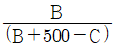
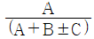
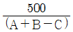
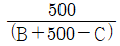
(정답률: 알수없음)
92. 포틀랜드시멘트의 성분 중 제일 많이 함유되고 있는 것은?
- 실리카
- 산화철
- 석회석
- 알루미나
(정답률: 알수없음)
93. 재료가 산이나 알칼리(Alkali), 염류 등의 작용에 저항하는 성질을 다음의 무엇이라 하는가?
- 내화학약품성(Chemicals-proof)
- 내마모성(abrasion-resistant)
- 내후성(Weather-proof)
- 내충격성
(정답률: 알수없음)
94. 재료의 역학적 성질에 관한 다음 내용 중에서 잘못 이루어진 것은?
- 응력: 외력에 저항하기 위해 발생하는 재료 내부의 힘
- 변형: 외력의 작용으로 재료의 형상이 변화하는 것
- 피로저항: 반복하중에 따라 생기는 응력을 재료가 저항하는 것
- 연성 : 재료에 인장력을 주어 얇게 펴서 늘릴 수 있는 성질
(정답률: 알수없음)
95. 콘크리트의 반죽질기를 측정하는 슬럼프시험에 관한 것으로 가장 알맞은 것은?
- 밑면 지름 20cm, 윗면지름 10cm, 높이 20cm의 반 원추형 몰드를 사용한다.
- 몰드 속에 콘크리트를 용적의 3등분으로 나누어 넣고 다짐봉으로 각각 25회 씩 균일하게 다진다.
- 슬럼프값은 밑에서 허물어진 높이까지의 높이이다.
- 몰드속에 쳐 넣은 콘크리트는 잘 다져야 하므로 30회 이상 다짐봉으로 다져야 한다.
(정답률: 알수없음)
96. 다음 중 콘크리트의 비파괴 시험방법이 아닌 것은?
- 음향방출법(Acoustic Emission)
- 표면경도방법(수동해머, 낙하해머등)
- 슬럼프(slump)시험방법
- 음향학적방법(공진방법, 초음파방법)
(정답률: 알수없음)
97. 재료는 화학조성에 따라 무기재료와 유기재료로 분류되는데 다음 중 유기재료에 속하지 않는 것은?
- 금속재료
- 목재
- 역청재료
- 고분자재료
(정답률: 알수없음)
98. 다음 중에서 콘크리트의 탄성계수를 계산할 때 사용되는 것은 어느 것인가?
- 단위시멘트량
- 물·시멘트비(W/C)
- 단위수량
- 콘크리트 28일 압축강도의 평방근
(정답률: 알수없음)
99. 재료에 외력이 작용할 때 시간의 경과에 따라 재료의 응력이 감소하는 현상을 무엇이라 하는가?
- 크리프(Creep)
- 인성
- 취성
- 리락세이션(relaxation)
(정답률: 알수없음)
100. 해양에서 철강재료의 부식의 요인을 열거한 것 중 틀린 것은?
- 용존산소
- 염분농도
- 융점
- 수온
(정답률: 알수없음)
염소량과 염화물 이온의 양은 다음과 같은 관계가 있습니다.
염소량(g) = 염화물 이온의 양(mol) × 분자량(g/mol)
분자량은 염화물 이온(Cl-)의 경우 35.45 g/mol입니다.
따라서, 염소량(g)을 염화물 이온의 양(mol)으로 환산하면 다음과 같습니다.
염화물 이온의 양(mol) = 염소량(g) ÷ 35.45(g/mol)
이를 이용하여, 염분을 환산하는 공식은 다음과 같습니다.
염분(g/L) = 염화물 이온의 양(mol/L) × 분자량(g/mol) + 나트륨 이온의 양(mol/L) × 분자량(g/mol)
하지만, 대부분의 염분 측정기는 염화물 이온의 양만을 측정하므로, 나트륨 이온의 양은 무시할 수 있습니다.
따라서, 염분을 환산하는 공식은 다음과 같습니다.
염분(g/L) = 염화물 이온의 양(mol/L) × 분자량(g/mol)
염화물 이온의 양(mol/L)은 염소량(g/L)을 염화물 이온의 양(mol/L)으로 환산한 값입니다.
염분(g/L) = 염소량(g/L) ÷ 35.45(g/mol) × 58.44(g/mol)
이를 간단하게 정리하면,
염분(g/L) = 1.80655 × 염소량(g/L)
따라서, 정답은 "S = 1.80655×Cl"입니다.